人材開発支援助成金コンシェルジュ操作マニュアル
スマホで書類を出して、進み具合と期限を見るまで。
毎日の操作を、画面の写真つきでご案内します。
知りたいことから、開けます
スマホひとつで、助成金の準備が進みます
書類を撮って出す
紙の書類はスマホで撮るだけ。PDFでも大丈夫です。
AIがその場で確認
発行日・会社名・人数などを読み取り、気になる点をすぐ表示します。
期限と進み具合が見える
次の期限まであと何日か、いまの段階が何％かが一目で分かります。
担当者とやりとり
分からないことは、メッセージでいつでも聞けます。
IDやパスワードを預かりません
GビズIDのIDやパスワード、口座の情報を、このアプリで入力していただくことはありません。
AIと人の二重チェック
AIの確認のあと、担当者と社会保険労務士が人の目で確かめます。最後の判断は労働局です。
期限の前にお知らせします
期限の14日前と3日前に、LINEやメールでお知らせします。
手続きは7つの段階で進みます
お客様
書類を出す、質問に答える、研修を受ける、出勤簿をつける。
担当者（申請の窓口）
書類集めと期限の管理。そろった書類を社労士に引き継ぎます。
社会保険労務士
申請書類を作り、内容を確かめて確認印を押し、労働局へ出します。
労働局
申請を審査し、助成金を支給するかどうかと額を決めます。
右上のボタンから、IDとパスワードで入ります
画面右上のアカウントボタンを押すと、ログイン画面が開きます。
- 1ログインID担当者からお知らせするIDを入れます（例：
cl-midori）。 - 2パスワードご自身で決めたパスワードです。運営側も見ることはできません。
- 3ログイン押すと、自社のマイページ（ホーム）が開きます。ほかの会社の情報は表示されません。
- 4試作版の案内このデモでは、パスワードはすべて
demoです。
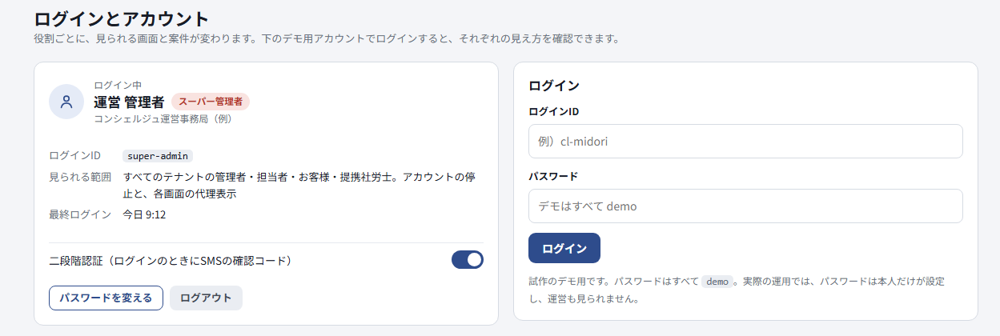
1234cl-midoricl-hikaricl-soleilcl-yamatocl-sakuracl-aozoracl-tachibanacl-kaedecl-harukaze開いたら、いまの段階と期限が出ます
- 1いまの段階「いまは『事前準備』の段階です」のように表示します。会社名とコースも確認できます。
- 2次の期限次の期限まであと何日かと、その日付です。この例は計画届の提出期限まであと31日です。
- 3全体の流れ（7段階）「いまここ」が今の段階です。済んだ段階にはチェックが付き、右側に各段階の期限が出ます。
- 4お助け情報制度のしくみや大事な期限の説明は、ここから開きます（09章）。
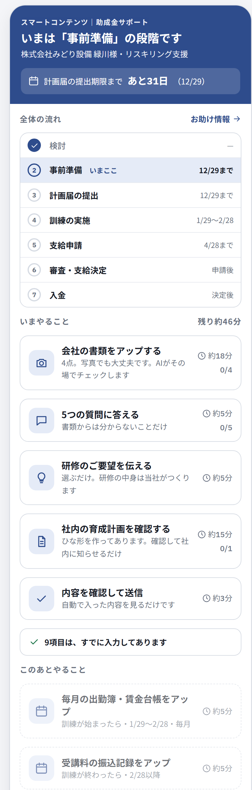
1234「いまやること」を、上から順に押すだけ
- 1残りの時間やることの想定時間の合計です（例：残り約46分）。
- 2やることのカード押すと、その画面が開きます。終わると「完了」になります。
- 3想定時間と件数「約18分」「0/4」は、目安の時間と、済んだ数／全体の数です。
- 4入力済みの項目名刺や公開情報から、先に入れてある項目です。
- 5お知らせ社労士が計画届を作成中、担当者が書類を確認した、などの状況です。
- 6申請の進み具合手続き全体の％と、いまの段階の％です。作業の量に合わせて数えます。
事前準備の段階の例
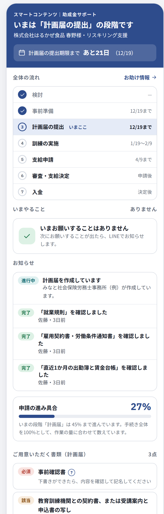
56計画届の段階の例（別の会社）
書類は、撮って送るだけです
- 1書類の名前と状態まだの書類は「未提出」。下に取り方の説明（例：法務局で取得）が出ます。
- 2撮影・ファイルを選ぶスマホのカメラで撮るか、写真・PDFを選びます。
- 3サンプルで試す試作版だけのボタンです。見本の書類で動きを確かめられます。
- 4どこにある？／まだ手元にない書類の探し方を表示します。手元にないときは「後日アップ」にできます。
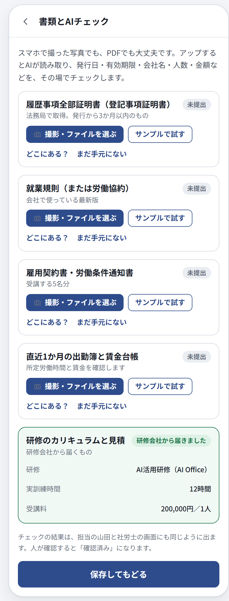
1234AIの結果は、その場で表示されます
- 1判定「確認済み」「要確認」など。判定が分かれたは、AIの2つの読み方で結果が違ったという意味で、人が確認します。
- 2AIが読み取った内容発行日・商号・本店・代表者などです。
- 3要確認の理由例：発行日から3か月が、計画届の提出期限より前に過ぎます。間に合わないときは取り直します。
- 4次の操作もう一度AIでチェック／担当者に確認してもらう／撮り直す、から選べます。
- 5確認済み担当者が人の目で確かめると、緑の「確認済み」になります。
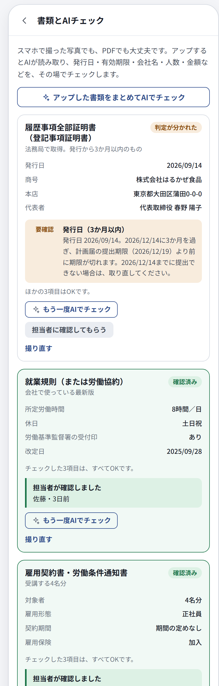
12345質問もご要望も、選ぶだけで答えられます
- 15つの質問（約5分）書類からは分からないことだけを聞きます。入力は自動で保存されます。
- 2GビズIDプライム「取得済み・申請中・これから」を選ぶだけです。IDやパスワードは不要です。
- 3時間がかかっている業務困っている業務を選びます（いくつでも）。研修の中身は、助成金の要項に沿って担当者側で組み立てます。
- 4これまでに受けた研修同じ内容にならないよう、記録を表示します。ほかにあれば書き足してください。
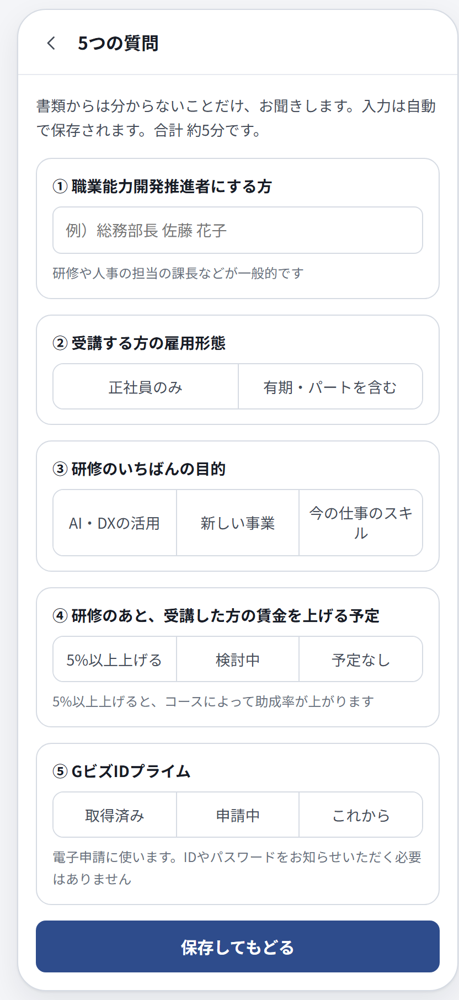
125つの質問
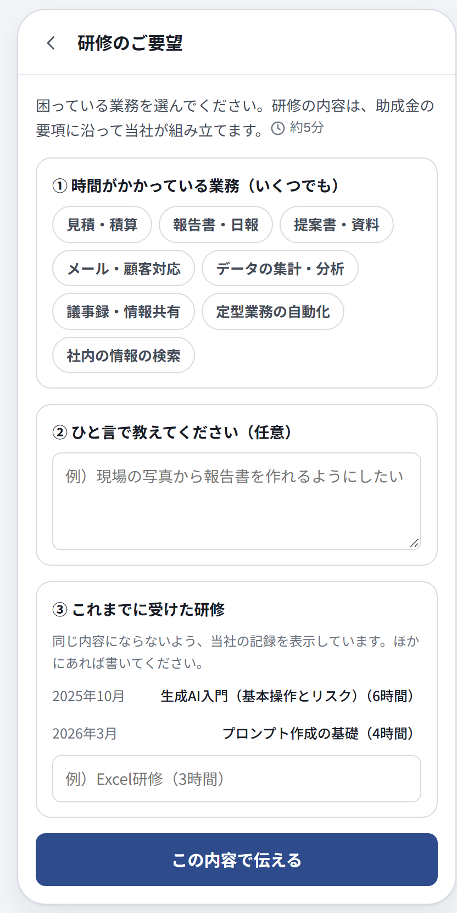
34研修のご要望
ひな形を確かめて、まとめて送信します
- 1社内の育成計画のひな形助成金に必要な「事業内職業能力開発計画」のひな形です。内容を確認します（約15分）。
- 2社内に知らせたらチェック掲示板・全員へのメール・朝礼のどれかで知らせたら、チェックして保存します。
- 3修正「内容の確認」では、自動で入った内容のうち、違うところだけ直します。
- 4出どころの印公開情報・名刺・研修会社・ご回答など、どこから入れたかを行ごとに表示します。
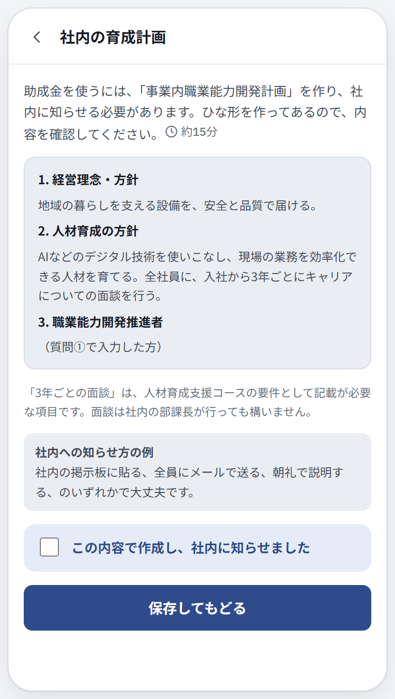
12社内の育成計画
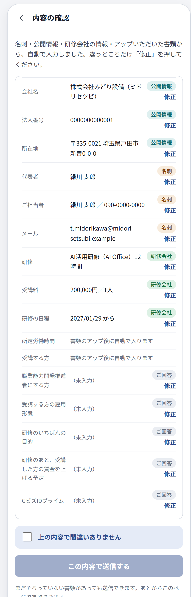
34内容の確認
大事な期限は2回。過ぎると助成を受けられません
① 研修中も、ふだんどおり給料を
研修を受けた時間も、通常の賃金を払ってください。賃金助成の対象になります。
② 出勤簿を毎日つける
受講の記録と出勤簿が合っている必要があります。毎月の出勤簿・賃金台帳をアップします。
③ 受講料は全額を先に
支給申請の前に、受講料を全額お支払いください。振込の記録をアップします。
ホームの下の「マイページ」から開きます
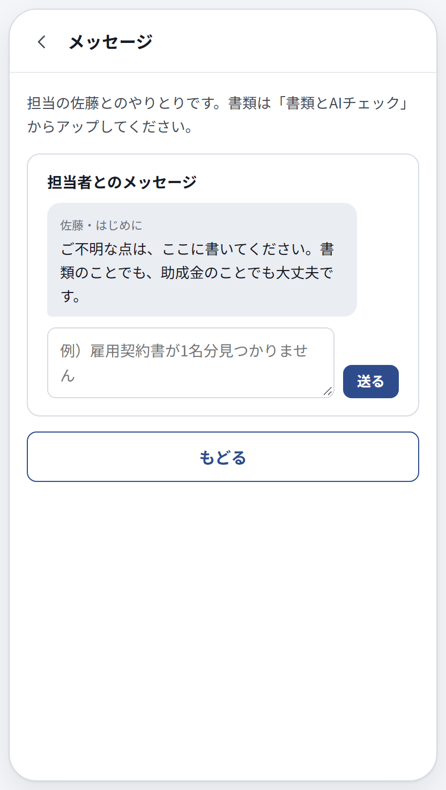
メッセージ担当者とのやりとりです。書類のことでも、助成金のことでも聞けます。

助成金の見込み経費助成と賃金助成の内訳です。実際の額は労働局の審査で決まります。
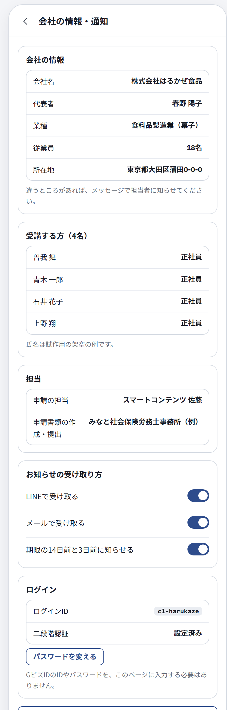
会社の情報・通知LINE・メールのお知らせ、期限の14日前と3日前の通知、パスワードの変更。
制度のことは、御社の数字で説明します
- 1どんな制度？研修の費用と、研修時間の賃金の一部が国から戻る制度です。
- 2御社の場合の目安コース・助成の割合・見込みの額を、御社の人数で出します。
- 3大事な期限は2回計画届と支給申請の期限を、御社の日付で表示します。
- 4研修中にお願いすること給料・出勤簿・受講料の3つです（07章）。
用語の横の「？」
「事前確認書」などの専門用語の横にある「？」を押すと、ひとことの説明が出ます。
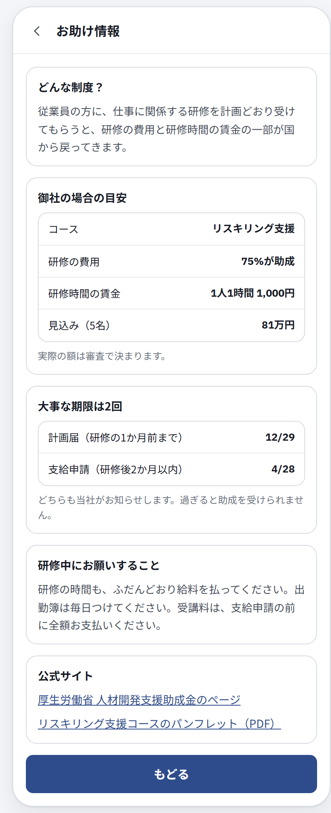
1234よくある質問
担当者にご連絡ください。再設定の手続きをご案内します。パスワードは運営側も見られません。
このアプリで聞くことはありません。入力せずに、担当者へお知らせください。
書類の下の「どこにある？」を押してください。それでも分からないときは、メッセージで聞けます。
「まだ手元にない」を押すと、後日アップにできます。期限に間に合うよう、担当者からも声をかけます。
理由を読んで撮り直すか、「担当者に確認してもらう」を押してください。最後は人が確かめます。
すぐにメッセージで担当者へ。期限を過ぎると助成を受けられないため、早めのご相談が大切です。
見込みは目安です。実際の額は、労働局の審査で決まります。
支給申請のあと、労働局の審査を経て支給が決まり、入金されます。時期は審査によって変わります。